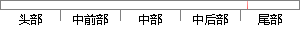

25,winnow=T,noGlobalPruning=F,minCases =20)
片段位置图

相似结果|
相似片段 1：数据源；采用的特征选择是IG；采用的分类算法是K-近邻法(1eON)，邻域个数为13、向量中心法(centmid-based)和Winnow算法；当选择的特征个数为1、3、5、10、15、20、25
相似片段 2：误差最小[25][26]。Winnow算法是一种典型的线性分类器[20]，最大特点是比较简单、容易实现，它是解决分类问题时常用的一种方法[27]。决策树方法是数据挖掘中一种重要的分类方法[21]，它
|
※ 片段修改建议 ※
近似词参考：